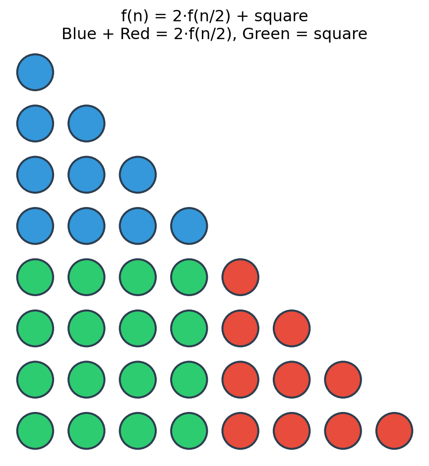
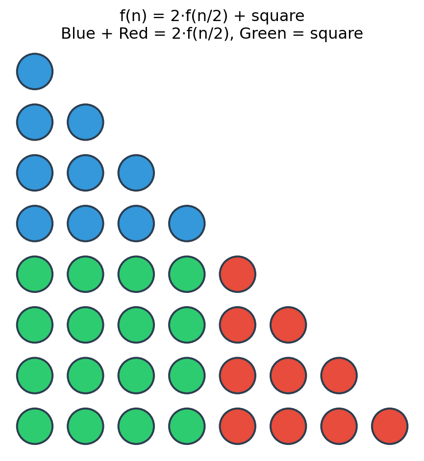
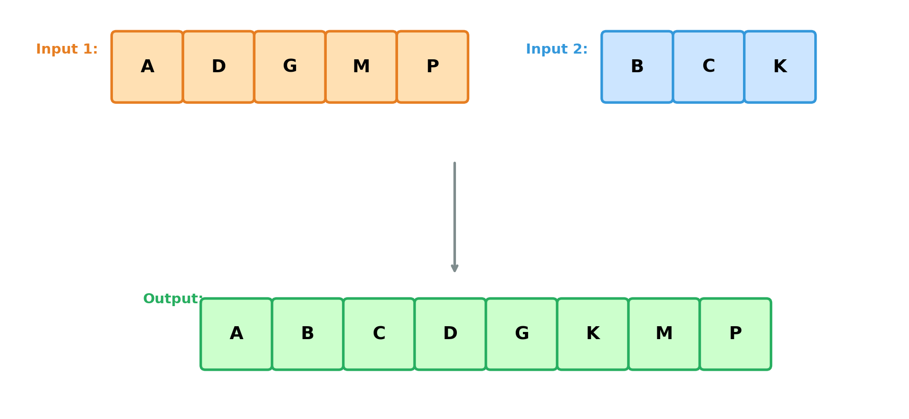
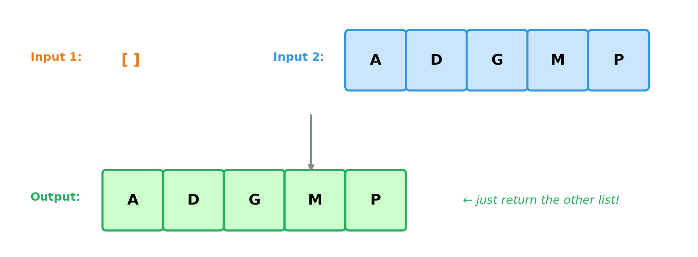
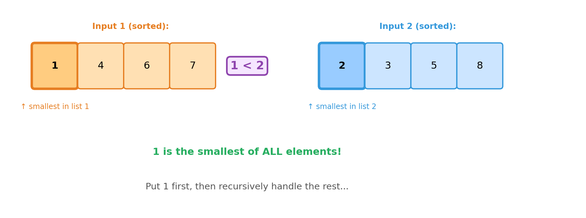
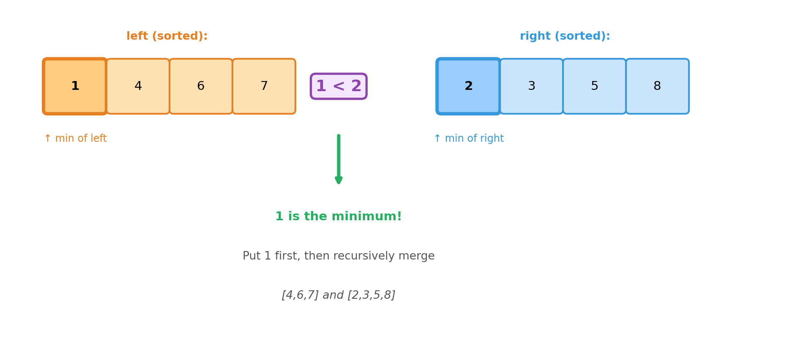
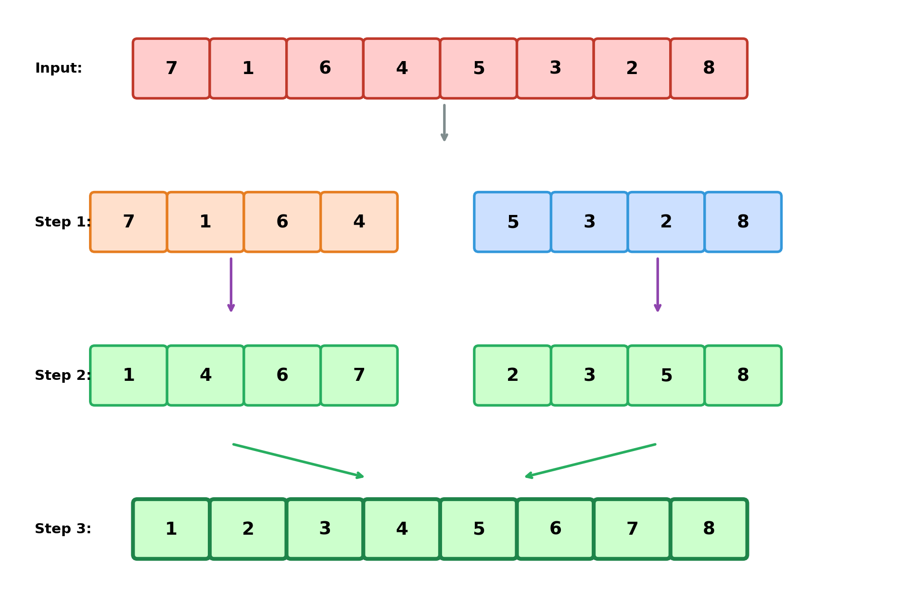
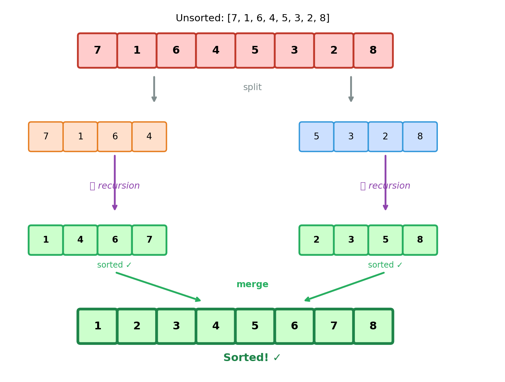

Week 4, Monday
January 26, 2026
We computed \(1 + 2 + 3 + \ldots + n\) recursively:

The mathematical decomposition: \(f(n) = 2 \cdot f(\lfloor n/2 \rfloor) + (n - \lfloor n/2 \rfloor)^2\)
Both compute the same answer. But are they equally fast?
| Code | How many recursive calls? |
|---|---|
2 * triangle_fast(half) |
ONE call, multiply result by 2 |
triangle_double(half) + triangle_double(half) |
TWO calls! |
The mathematical relationship is: \(f(n) = 2 \cdot f(\lfloor n/2 \rfloor) + (n - \lfloor n/2 \rfloor)^2\)
But the time to compute depends on how many recursive calls we make!
When we write recursive code, how do we figure out its running time?
The answer: We write a recurrence relation for \(T(n)\), the time.
triangle_fast: \(T(n) = T(n/2) + O(1)\) — ONE calltriangle_double: \(T(n) = 2T(n/2) + O(1)\) — TWO callsDifferent recurrences → different running times!
Let’s explore this through another recursive puzzle…

Both inputs are sorted
The output contains all elements from both inputs
The output is sorted
The function: Given two sorted lists, produce one sorted list with all elements.
What’s the simplest case?

What if both lists have elements?

The smallest element overall must be at the front of one of the lists!
Each recursive call: processes one element.
How many calls? Exactly \(n\) (total elements).
Running time: \(O(n)\)
Induction on the total size \(n = |left| + |right|\).
Base cases: If either list is empty, return the other. ✓
Inductive step: Assume merge works for total size \(< n\).

Inductive step: Given sorted lists left and right with total size \(n\):
left[0] and right[0] (the two minima)Therefore, merge is correct for all inputs. ∎

Testing shows it works on examples. But how do we prove it always works?
Induction on the size of the input:

A list with 0 or 1 elements is already sorted. ✓
Assume: merge_sort correctly sorts any list of size \(< n\).
Goal: Show merge_sort correctly sorts a list of size \(n\).
By our assumption, left_sorted and right_sorted are correctly sorted.
Thus they are valid inputs to merge.
We have already proved correctness of merge, so we are done!
merge_sort works for sizes \(< n\)left_sorted is sorted (by IH, since size \(< n\))right_sorted is sorted (by IH, since size \(< n\))merge combines them correctly (by earlier proof)merge_sort works for size \(n\) ✓By induction, merge_sort is correct for all \(n\). ∎
The recurrence:
\[T(n) = 2T(n/2) + O(n)\]
\[T(n) = 2T(n/2) + n\]
This is a recurrence relation: T(n) defined in terms of T(smaller).
merge_sort([7,1,6,4,5,3,2,8])
/ \
merge_sort([7,1,6,4]) merge_sort([5,3,2,8])
/ \ / \
ms([7,1]) ms([6,4]) ms([5,3]) ms([2,8])
/ \ / \ / \ / \
[7] [1] [6] [4] [5] [3] [2] [8]How deep does this go?
At each level, problem size halves: \(n \to n/2 \to n/4 \to \ldots \to 1\)
Depth = How many times can we halve \(n\)?
\[n \to n/2 \to n/4 \to \ldots \to 1\]
Answer: \(\log_2 n\) levels
Level 0: [n] n work (merge)
/ \
Level 1: [n/2] [n/2] n work (two merges of n/2)
/ \ / \
Level 2: [n/4]×4 n work (four merges of n/4)
...
Level log n: [1]×n n work (base cases)Total work: \(n \times \log n = O(n \log n)\)
Different recursive structures - → different recurrences - → different running times!
Example: Processing a list one element at a time
\(T(n) =\)
Example: Binary search
\(T(n) =\)
Example: triangle_double — calls itself twice!
\(T(n) =\)
Example: Merge sort!
\(T(n) =\)
Example: Selection sort (find min, then sort rest)
\(T(n) =\)
| Algorithm | Recurrence | Solution |
|---|---|---|
| Binary search | \(T(n) = T(n/2) + O(1)\) | |
| Merge sort | \(T(n) = 2T(n/2) + O(n)\) | |
| Linear search | \(T(n) = T(n-1) + O(1)\) | |
triangle_double |
\(T(n) = 2T(n/2) + O(1)\) | |
| Selection sort | \(T(n) = T(n-1) + O(n)\) |
| Recurrence | Solution | Why? |
|---|---|---|
| \(T(n) = T(n-1) + 1\) | \(O(n)\) | \(n\) levels × \(O(1)\) work |
| \(T(n) = T(n/2) + 1\) | \(O(\log n)\) | \(\log n\) levels × \(O(1)\) work |
| \(T(n) = 2T(n/2) + 1\) | \(O(n)\) | Doubling nodes overwhelms depth |
| \(T(n) = 2T(n/2) + n\) | \(O(n \log n)\) | \(\log n\) levels × \(O(n)\) work |
| \(T(n) = T(n-1) + n\) | \(O(n^2)\) | \(n\) levels × \(O(n)\) avg work |
Math vs. Time: Same functionality, different running times!
Merge sort: Divide, conquer, merge
MS recurrence: \(T(n) = 2T(n/2) + O(n)\)
Recursion sketches: Visualize depth × work per level
Recurrence forms: Different structures → different runtimes